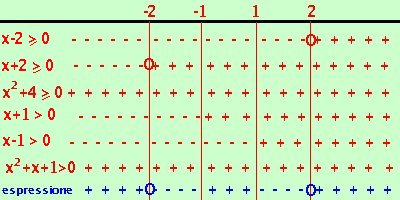

Esercizio su disequazione di quarto grado
risolviamo la disequazione:
x4 - 16
----------------------
x4 + x3 - x - 1 |
 0 0 |
Scomponiamo in fattori sia il numeratore che il denominatore
- Scomposizione del numeratore
Considero il polinomio associato
x4 - 16 =
devo scomporlo in fattori; sono 2 termini,e' una differenza di quadrati
x4 - 16 = (x2 - 4)(x2 + 4) =
il primo fattore e' ancora una differenza di quadrati mentre il secondo come somma di quadrati non e' piu' scomponibile
= ( x - 2)(x + 2)(x2 + 4)
-
Scomponiamo il denominatore
Considero il polinomio associato
x4 + x3 - x - 1 =
sono 4 termini:
- Non e' il cubo di un binomio
- Puo' essere un raccoglimento parziale
provo a scomporre come raccoglimento parziale
x4 + x3 - x - 1 = x3(x+1) - 1(x+1) = (x+1)(x3 - 1) =
L'ultimo fattore (2 termini) come differenza di cubi e' scomponibile, quindi ottengo
= (x+1)(x-1)(x2+x+1)
L'ultimo fattore non e' piu' scomponibile
quindi ottengo
( x - 2)(x + 2)(x2 + 4)
------------------------------
(x+1)(x-1)(x2+x+1) |
 0 0 |
Poniamo ogni fattore del numeratore maggiore od uguale a 0 ed ogni fattore del denominatore solamente maggiore di zero (lo zero non puo' mai essere al denominatore)
- x - 2 0
x 2
- x + 2 0
x -2
- x2 + 4 0
sempre vero (delta minore di zero)
- x + 1 > 0
x > -1
- x - 1 > 0
x > 1
- x2+x+1 > 0
sempre vero (delta minore di zero)

Adesso riporto i risultati su un grafico indicando con un un + dove ogni disequazione e' verificata e con un - dove non e' verificata inoltre indico con un cerchietto i punti dove il fattore vale zero ed e' accettabile e poi faccio il conto dei segni:
devo prendere gli intervalli dove il prodotto dei segni dei fattori (cioe' il segno dell'espressione) risulta positivo o nullo.
Ottengo come risultato:
x  -2 U
-1 < x < 1 U x 2 -2 U
-1 < x < 1 U x 2
Nota che anche qui avrei potuto tralasciare i due fattori con delta minore di zero perche',essendo positivi, non influiscono sul segno del risultato
|